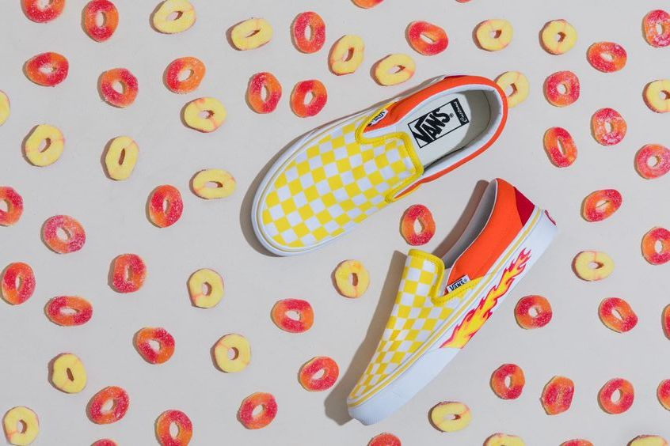
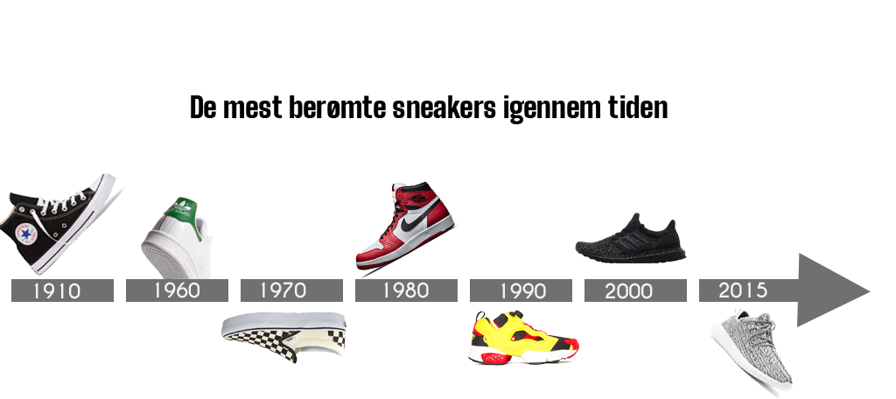

Sneaker boom
Sneaker salget har haft et kæmpe boom de sidste år, hvis vi kigger på det danske gadebillede vil vi helt sikkert se en bred vifte af sneakers, sneakeren bliver brugt af alle lige fra teenagere til midaldrende mænd.
Mange sneakers sælges i et begrænset parti og køberne er villige til at betale en stor sum penge for gummiskoen og for den sags skyld villige til at ligge i kø om natten, for at sikre sig at få fingrene i de helt nye og hippe modeller.

Hvorfor er vi blevet så begejstrede for sneakeren?
Det er vi formentligt fordi, at sneakeren er meget alsidig, den kan bruges til alle slags outfits og til en hver anledning, uden at modepolitiet kommer med løftede pegefingre og så er de ovenikøbet behagelige at have på.
De store modehuse som Gucci, Balenciaga, Chanel, Prada osv. producere også alle sammen sneakers, så hvis et par Nikes til 1500 kr. er for billige, så kan du købe designer sneakers til minimum 5000 kr. For mange er sneaker-shopping blevet en hobby og flere har en samling der tæller over 100 par, heriblandt flere par, som aldrig er blevet brugt og formentlig aldrig vil blive brugt, da de udelukkende er købt som samleobjekter.

Re-sellers
Grundet den store hype og efterspørgsel på sneakers, er der naturligvis også folk som har fundet en let smutvej, til at tjene lidt ekstra penge herigennem, det drejer sig om de såkaldte “re-sellers”. Det kan være ofte være svært at få fingrene i limited-edition sneakers, enten skal man være ultra hurtig på tasterne, når der er online-releases eller man kan ligge i kø natten over, så man er klar når udbyderene slår dørerne op til release.
Re-sellerne sidder klar på forskellige platforme, for at købe så mange par som muligt, af det begrænsede parti af sneakers, udelukkende med det formål at sælge dem videre til overpris.
Der er sågar set tilfælde hvor hjemløse er blevet betalt, for at “holde plads” i køen til den fysiske butik for den pågældende køber, for at komme dette problem til livs, er der blevet lavet “raffles”, det betyder at man via sin e-mail kan deltage i en raffle (lodtrækning), for at få lov til at købe den pågældende sko som en af de første.